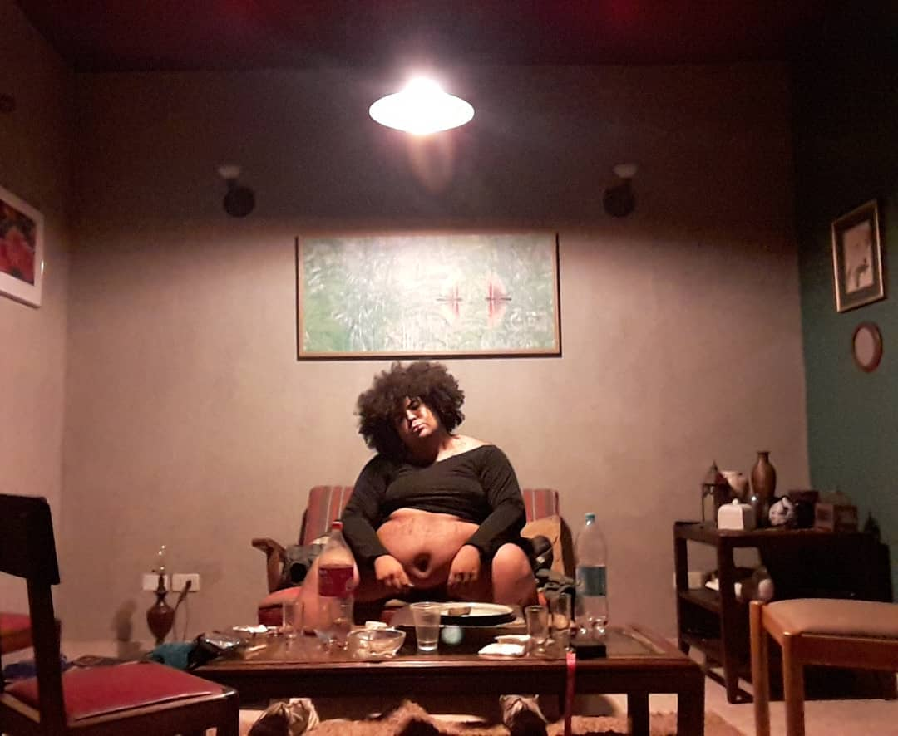

Não vão nos matar agora, uma obra de Jota Mombaça
"Como desfazer o que me tornaram?" Com esta e tantas outras indagações, Jota Mombaça aponta horizontes que vislumbram a importancia de exister e performar em meio às feridas deixadas pelo colonialismo. Não vão nos matar agora é um espaço de experimentação, fazendo da palavra e do corpo ferramentas de crítica, potência e combate. As reflexões forjadas nessa obra, testemunham uma produção de conhecimento original e interdiciplinar, permeada por tensões permanentes em que a autora busca repensar o mundo como o conhecemos, propondo alternativas e transformações rumo ao novo. Trata-se, pois, de afirmar a resistência dos corpos vigiados por sistemas de controle. Corpos - e corpas - que seguem de pé apesar das adversidades de um ambiente dominado por padrões opressivos, pela obsessão em rotulá-los e negá-los, na inútil tentativa de capturá-los.